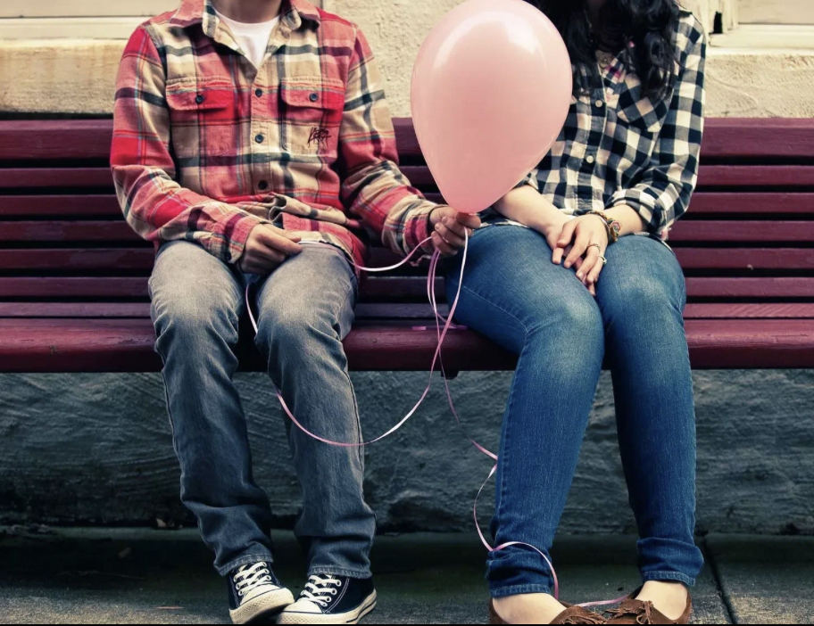

Первая любовь

Первая любовь – особенное чувство, которое оставляет неизгладимый след в душе каждого человека. Для подростка это время открытий, сильных эмоций и важных жизненных уроков.
Особенности первой любви
Идеализация
Склонность видеть в объекте симпатии только лучшие качества, игнорируя недостатки.
Интенсивность
Чувства переживаются очень ярко и глубоко, часто сопровождаются сильными эмоциональными всплесками.
Драматизм
Любые события воспринимаются очень остро, даже небольшие проблемы кажутся катастрофой.
Эмоциональный опыт
Первая любовь – это важный этап эмоционального развития, который помогает:
- Научиться понимать свои чувства
- Развить эмпатию
- Формировать навыки общения
- Познать себя через отношения с другими
"Первая любовь – это не только романтические чувства, но и важный опыт самопознания и взросления."
Советы подросткам
Что делать
- Уважать свои чувства и чувства других
- Сохранять свои интересы и увлечения
- Делиться переживаниями с близкими
- Помнить о личных границах
Чего избегать
- Полностью растворяться в отношениях
- Забывать об учебе и других обязанностях
- Терять связь с друзьями
- Идти против своих принципов
Рекомендации родителям
- Относитесь с пониманием к чувствам подростка
- Не высмеивайте и не обесценивайте переживания
- Будьте готовы выслушать и поддержать
- Делитесь своим опытом, но не навязывайте его
- Помогите справиться с сильными эмоциями